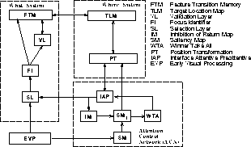

Main menu:

Abb.: Diese Abbildung gibt nur die prinzipielle Struktur der neuronalen Modellarchitektur wieder, wie sie für den ersten Schritt beim Übergang vom Agenten zur neuronalen Modellarchitektur entsteht.
Die neuronale Modellarchitektur, innerhalb der die Selbstorganisation der zeitlichen Objektrepräsentation erfolgt, wurde auf der Basis des im Anhang A entwickelten statischen Neuronenmodells und des funktionalen Modells zur visuellen Aufmerksamkeit entwickelt. Die resultierende Modellarchitektur besteht aus einer Vielzahl von Schichten und Teilstrukturen,
die untereinander in Wechselwirkung treten.
Die wesentlichen Teilmechanismen der Modellarchitektur sind folgende: Es wurde eine neurobiologisch-
und psychologisch-motivierte Berechnungsvorschrift für die Auffälligkeitskarte entwickelt. Es wurde eine topologische, unscharfe Positionskodierung entwickelt, mit der sowohl relative als auch absolute Positionsinformation kodiert werden kann. Zu dieser Positionskodierung wurde eine Transformations-
vorschrift vorgestellt, mit der eine Konvertierung von relativer zu absoluter Positionsinformation und
umgekehrt möglich ist.
Die Lernvorgänge zur Selbstorganisation wurden durch physiologisch-motivierte Lernregeln realisiert.
Die wesentliche Eigenschaft dieser Lernregeln ist die auf der Hebb'schen Lernregel basierenden lokalen Berechnung.
Struktur und Funktionsweise der Modellarchitektur weisen Parallelen zu den bekannten ART-Architekturen
auf und konnten dazu genutzt werden, um Prädiktionen über die Funktionalität von Neuronen im Inferotemporalen Cortex zu entwickeln. Insgesamt wirkt das Verhalten der Modellarchitektur wenig
biologisch-plausibel. Aber aufgrund der Bezüge zu Funktionalitäten des Inferotemporalen Cortex könnte die Modellarchitektur einen Modellierungsansatz für die Betrachtung von komplexen zeitlichen Vorgängen unter Berücksichtigung von lokalen Lernvorgängen sind. Diese Eignung der Modellebene muß in weiterführenden Arbeiten untersucht werden.
Einige Teilmechanismen der neuronalen Modellarchitektur wurden auf der Basis eines dynamischen Neuronenmodells gesondert im Anhang untersucht. Grundlage dieser Untersuchungen bildet die Energiefunktion des kontinuierlichen Hopfield-Modells. Die Ergebnisse dieser Untersuchungen weisen auf mögliche Eigenschaften einer kontinuierlichen, zeitlichen Objektrepräsentation hin.
Diese Eigenschaften könnten u.a. Generalisierungsfähigkeit und Fehlertoleranz umfassen. In einer verallgemeinerten Sichtweise führen diese Untersuchungen von einer zeitlichen Objektrepräsentation zu einer zeitlichen Merkmalsextraktion, die die Möglichkeit schneller Lernvorgänge eröffnen könnte. Doch sind diese Überlegungen rein hypothetischer Natur und müssen in weiterführenden Arbeiten verifiziert werden.
zurück 4 - Selbstorganisation
zurück 1 - Einleitung